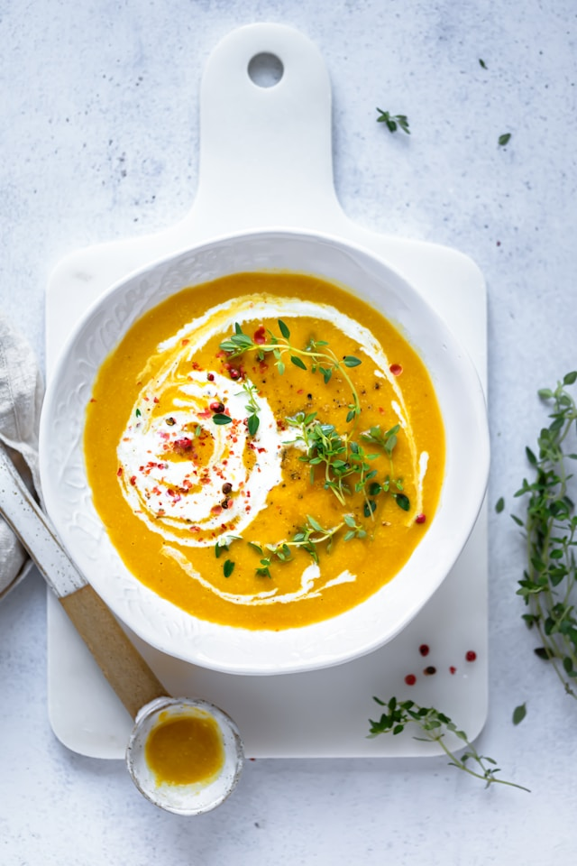

Roasted Butternut Squash Soup

Description
This homemade butternut squash soup is the best I’ve ever tasted! This recipe is super creamy (yet cream-less) and full of delicious butternut flavor. Leftover soup tastes even better the next day. Recipe yields about 4 bowls or 6 cups of soup.
Ingredients
- 1 large butternut squash (about 3 pounds), halved vertically* and seeds removed
- 1 tablespoon olive oil, plus more for drizzling
- ½ cup chopped shallot (about 1 large shallot bulb)
- 3 to 4 cups (24 to 32 ounces) vegetable broth, as needed
- Freshly ground black pepper, to taste
Steps
- Preheat the oven to 425 degrees Fahrenheit and line a rimmed baking sheet with parchment paper. Place the butternut squash on the pan and drizzle each half with just enough olive oil to lightly coat the squash on the inside (about ½ teaspoon each). Rub the oil over the inside of the squash and sprinkle it with salt and pepper.
- Turn the squash face down and roast until it is tender and completely cooked through, about 40 to 50 minutes (don’t worry if the skin or flesh browns—that’s good for flavor). Set the squash aside until it’s cool enough to handle, about 10 minutes.
- Turn the squash face down and roast until it is tender and completely cooked through, about 40 to 50 minutes (don’t worry if the skin or flesh browns—that’s good for flavor). Set the squash aside until it’s cool enough to handle, about 10 minutes.
- Use a large spoon to scoop the butternut squash flesh into your blender. Discard the tough skin. Add the maple syrup, nutmeg and a few twists of freshly ground black pepper to the blender. Pour in 3 cups vegetable broth, being careful not to fill the container past the maximum fill line (you can work in batches if necessary, and stir in any remaining broth later).
- If your soup is piping hot from the blending process, you can pour it into serving bowls. If not, pour it back into your soup pot and warm the soup over medium heat, stirring often, until it’s nice and steamy. I like to top individual bowls with some extra black pepper.